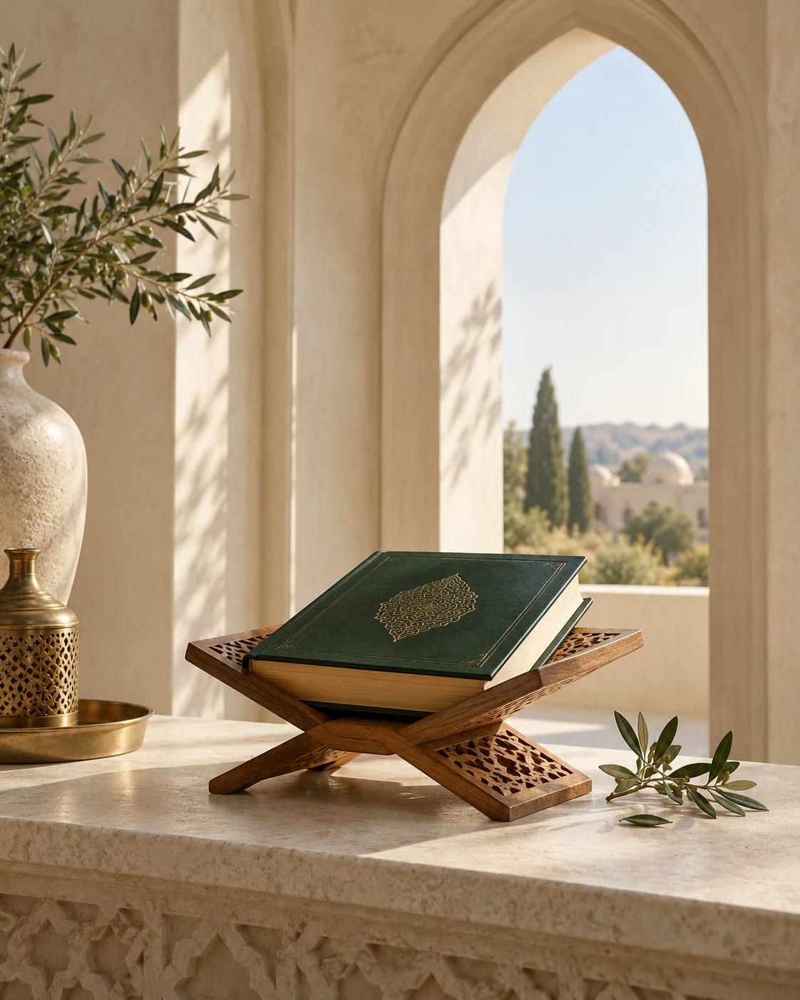
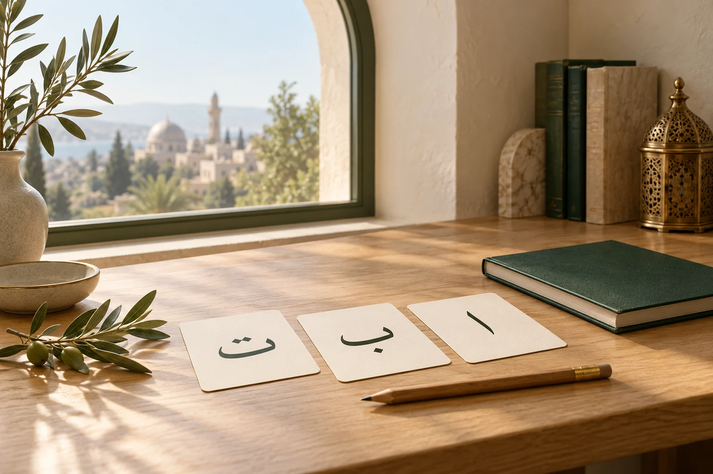
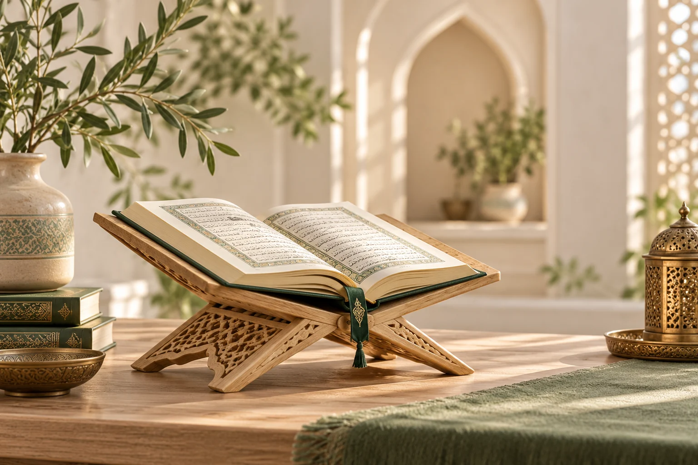
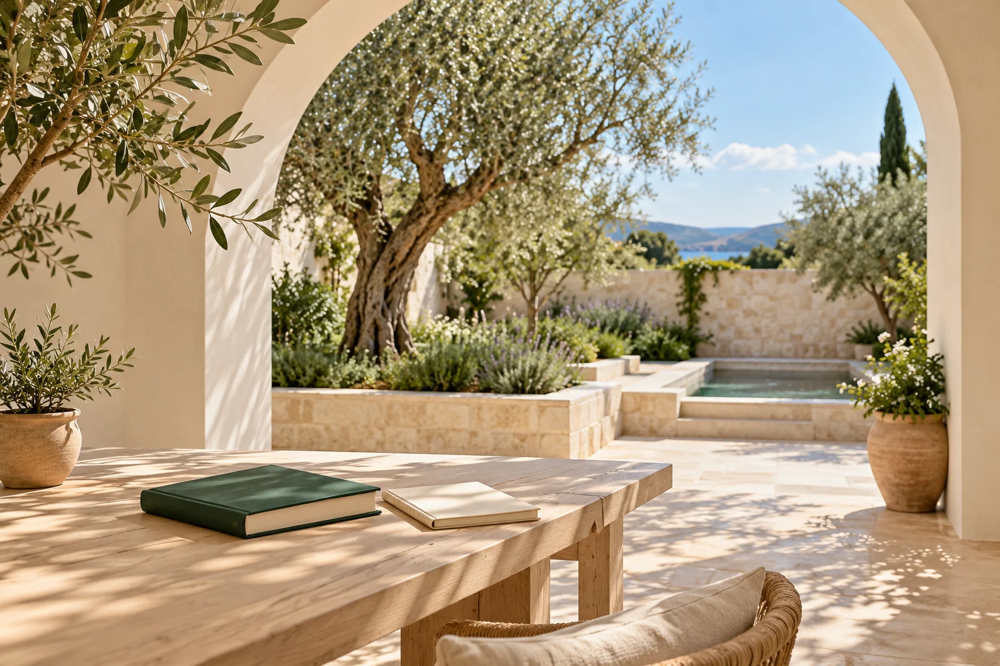
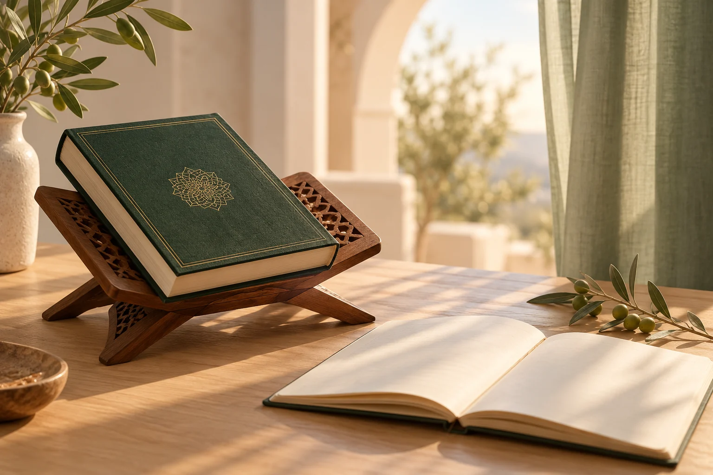

У каждого — свой темп
Помогаем ребёнку учиться спокойно и без спешки.
SHARIFA · ПРОГРАММА ОБУЧЕНИЯ
От первых арабских букв к чтению, заучиванию и благому нраву.
Посмотреть программуБережно. Постепенно. Вместе с семьёй.

«Лучшие из вас — те, кто изучает Коран и обучает ему других»
БУХАРИСАМОЕ ВАЖНОЕ
Любовь к Корану растёт с терпением и поддержкой.
Помогаем ребёнку учиться спокойно и без спешки.
Повторяйте уроки вместе. Регулярность помогает расти.
Учитель, ребёнок и семья — одна команда.
Ассаляму алейкум ва рахматуллахи ва баракатуху, уважаемые родители!
Мы рады видеть вас в нашей семье Sharifa. Прежде чем ознакомить вас с нашей программой, хотим сделать небольшое напоминание.
В изучении Корана нельзя спешить и ожидать больших результатов за короткий срок. Каждый ребёнок по-своему воспринимает это дело. Кто-то с интересом приступает к занятиям, кто-то боится, переживает, думает, что Коран — это настолько великое дело, что он не справится. Наша задача — постепенно, шаг за шагом, приучать ребёнка к этой прекрасной Книге, прививать ему любовь к Корану и уверенность в своих силах.
К сожалению, многие родители хотят увидеть удивительные результаты уже через 2–3 месяца, при этом дома практически не занимаются с ребёнком и не уделяют внимания домашним заданиям, которые мы даём. Но разница между детьми, которые повторяют уроки дома вместе с родителями, и теми, кто занимается только в школе, бывает очень большой. Дети, которым уделяют внимание дома, нередко уходят далеко вперёд.
Поэтому наша первая просьба к вам: если вы записываете ребёнка к нам, пожалуйста, уделяйте ему хотя бы 30 минут в день для повторения уроков. Эти полчаса могут существенно повлиять на результат, а за ваше участие в обучении ребёнка, иншаАллах, вас ожидает великая награда.
Вторая мысль, над которой мы предлагаем задуматься. Когда вы отдаёте ребёнка на борьбу или другой вид спорта, вы понимаете, что для серьёзных результатов нужны годы: два, три, четыре года тренировок, постоянная работа и терпение. Вы не ожидаете, что за 2–3 месяца ребёнок станет чемпионом и начнёт побеждать на соревнованиях.
Почему же в изучении Корана мы иногда хотим получить большие результаты всего за несколько месяцев?
Ведь правильное чтение Корана — это тоже путь, который требует времени, регулярных занятий, повторения и старания. Чтобы ребёнок научился читать Коран качественно, красиво и правильно, недостаточно просто довести его до чтения. Нужно продолжать работать над произношением букв, правилами таджвида, плавностью чтения и закреплением пройденного.
Мы просим вас набраться терпения, довериться нашей программе и пройти этот путь вместе с нами. Наша цель — в течение первого учебного года заложить ребёнку хорошую основу чтения Корана, а на втором году перейти к систематическому заучиванию 30-го джуза.
Помните: школа и учитель не смогут добиться максимального результата без участия родителей. Только совместная работа учителя, ребёнка и семьи, иншаАллах, приведёт к хорошим результатам.
ИншаАллах, пусть Аллах сделает вашего ребёнка причиной вашего вхождения в Рай, а вас — причиной Рая для ваших родителей.
Уважаемые родители, баракаллаху фикум за то, что выбрали нас и доверили нам самое ценное — своих детей. Мы искренне ценим ваше доверие и постараемся оправдать ваши надежды. Пусть Аллах благословит наши общие старания, дарует нашим детям любовь к Корану и сделает их из числа тех, кто изучает Коран и обучает ему других.

Знакомимся с арабским алфавитом и основами таджвида. Постепенно переходим к Корану.
Основа для правильного чтения.
За 2–3 месяца ребёнок осваивает арабские буквы, изучает основные правила таджвида и переходит к чтению Корана.
Изучаем все арабские буквы, их написание и правильное произношение (махрадж).
Знакомимся с базовыми правилами чтения, учимся правильно читать буквы и сочетания.
Регулярно проверяем знания: чтение букв, правила, правильность произношения.
После успешного прохождения этапа ребёнок начинает читать Коран.
Этот этап закладывает фундамент для дальнейшего чтения Корана. Успешный переход и качество чтения во многом зависят от регулярных занятий дома.

Читаем суры 30-го джуза. Закрепляем правила и внимательно работаем над произношением.
Больше уверенности в каждой строке.
На этом этапе ребёнок продолжает читать Коран, закрепляет правильное произношение и развивает плавность чтения.
Читаем суры 30-го джуза, закрепляем правильное произношение (махрадж).
Применяем правила таджвида на практике, исправляем ошибки, развиваем уверенность в чтении.
Регулярное повторение прочитанных сур, проверка и закрепление выученного.
Учитываем уровень ребёнка, даём задания и поддержку для дальнейшего роста.
Готов к переходу к заучиванию Корана и урокам Адаба

Повторяем пройденное, изучаем адаб и готовимся к заучиванию с сентября.
Крепкая основа для следующего этапа.
Летний период — это время закрепления, повторения и развития. Ребёнок продолжает читать Коран, укрепляет навыки, изучает уроки адаба по книге «Так учит нас Коран. 33 аята счастливой жизни» и готовится к новому этапу — заучиванию Корана с сентября.
Регулярное чтение пройденных сур, закрепление правильного произношения (махрадж) и плавности чтения.
Повторяем изученные правила, исправляем ошибки, развиваем уверенность в чтении.
Небольшие уроки адаба, чтение аятов, обсуждение смысла, примеры из жизни и практические задания.
Формируем полезные привычки, развиваем ответственность, трудолюбие, дисциплину и другие важные навыки.
Повторяем короткие суры, учим новые молитвы, делаем индивидуальные задания и формируем план на новый учебный год.
Летний период — это крепкий фундамент для успешного заучивания Корана и формирования благого нрава.

Заучиваем суры 30-го джуза и изучаем уроки адаба по книге «33 аята счастливой жизни».
Знания, которые становятся частью жизни.
На этом этапе ребёнок начинает заучивать суры 30-го джуза и параллельно изучает уроки адаба по книге «Так учит нас Коран. 33 аята счастливой жизни».
Начинаем заучивать суры 30-го джуза по установленной программе, с правильным произношением и повторением.
Проводим уроки адаба по книге «Так учит нас Коран. 33 аята счастливой жизни».
Объясняем смысл аятов простым и понятным языком, учим применять в жизни.
Формируем хорошие качества и красивый нрав: уважение к родителям, учителям, друзьям, окружающим и ответственное поведение.
Этот этап помогает ребёнку не только запомнить Коран, но и сформировать красивый нрав, основанный на аятах Корана, и заложить основу для всей жизни.
За лето проходим методичку: буквы, соединения и первые аяты. С сентября продолжаем обучение.
Старт чтения. Дальше — регулярная практика.
Летние курсы дают основу. Для уверенного чтения нужны дальнейшие занятия.
За лето мы проходим с детьми всю методичку и доводим их до чтения Корана — по установленной программе, с правильным произношением и основами таджвида.
Изучаем все буквы, соединения, правила чтения и доводим детей до чтения простых слов и аятов Корана.
Отрабатываем махрадж букв и основы таджвида на данном уровне.
Много читаем, повторяем, выполняем домашние задания и закрепляем чтение.
Небольшие уроки адаба по книге «Так учит нас Коран. 33 аята», развиваем хорошие качества в повседневной жизни.
ЗАПИШИТЕ РЕБЁНКА НА ПРОДОЛЖЕНИЕ ОБУЧЕНИЯ С СЕНТЯБРЯ ДО МАЯ
С сентября ребёнок начинает читать Коран по мусхафу: последовательно проходим и закрепляем суры 30-го джуза.
Работаем над правильным произношением, основами таджвида, плавностью чтения и регулярным повторением в течение всего учебного года.
Параллельно обучаем правильному совершению омовения, намаза и небольшие уроки адаба по книге «Так учит нас Коран. 33 аята счастливой жизни».
Летние курсы — первый шаг.